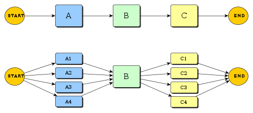
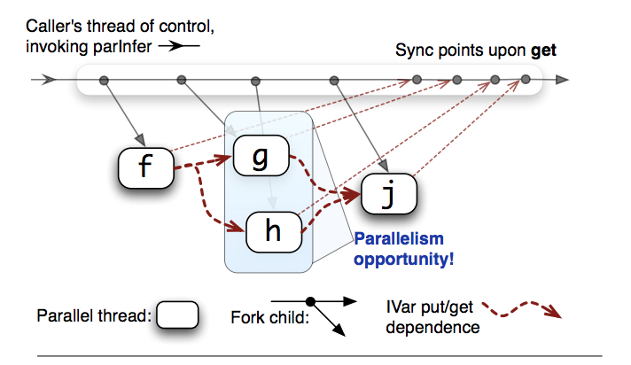

Deterministic Parallelism and Monad
Yogesh Sajanikar
Created: 2016-11-23 Wed 10:15
Overview
Functional Programming and Parallelism
A paradigm where
- Program as function evaluation
- No mutable data
- No changing states
Parallel Programming
Managing computation by distributing and executing processes simultaneously.

Why Parallel Programming
Because Free Lunch is over… (http://www.gotw.ca/publications/concurrency-ddj.htm - Herb Sutter)

Moore's law no more valid…
Parallel Programming is Hard
- Atomic operations
- Locks
- Synchronization
Conclusion: Non-determinism
Can my program work correctly? Why does it hang?
A FP model for Specifying Parallel Programs
- Separate "What" from "How"!
- Specify, Plan, Execute
Agenda
- FP, Monad
- Parallelism
However, the paradigm is not restricted to FP languages. One can apply it to any other language.
Functional Paradigm
Side effects
int add(int a, int *b) { printf("adding %d to %d", a, *b); return (a + *b); }
Side effects
int add(int a, int *b) { printf("adding %d to %d", a, *b); // Side effect ... stdout return (a + *b); // Side effect (value somewhere else) }
Functional Paradigm
- Immutability
- Persistence
- Closure

Call by name/value/normal form
(define (square x) (* x x)) (let ((n (+ 10 10))) (square n n))
- Name - bind 'n' to expression, evaluate
- Value - reduce 'n' to value, evaluate
- Normal Form - keep a reference to 'n', reduce 'n' whenever necessary
Normal form - Laziness
main = do let infiniteList = [1..] first10 = take 10 infiniteList print first10
What will C++ or Scala do?
Function as first class value
No difference between a Function and Value
x = 10 square x = x * x
You can treat both square and x as value as well as functions …
Immutability
main :: IO () main = do let x = 10 x = 20 print x
ERROR multiple declarations for x
Immutability
- Functions are not allowed to modify values
- Cannot print values… :-(
square :: Int -> Int square x = let answer = x * x in do print answer answer
Haskell will be happy to give a one page error.
Determinism
The above qualities immutability, persistence, and function gives determinism.
- Value of function (reduction) when applied same argument is always same
- It does not matter when we evaluate (reduce) functions
Looks like we have hit the recipe of parallel computation, as
- It does not matter where (thread/core/machine) where we evaluate functions
Monads
A monad (also triple, triad, standard construction and fundamental construction)[1] is an endofunctor (a functor mapping a category to itself), together with two natural transformations!
Just scaring you…
We use monads every day
int x = 10; int y = x + 10; int z = x + y;
a -> (a -> b) -> b x -> (x -> y) -> y (x,y) -> ((x,y) -> z) -> z
Haskell (writing monadic computations)
let z = pure 10 >>= \x -> (x, x + 10) >>= \(p,q) -> p + q
This is horrible, hence haskell gives a sugared way
do let x = 10 y = x + 10 x + y
And haskell will create the functional pipeline for you
Monad is a way to have side effect in haskell
main :: IO () -- IO where I can have side effects main = do print 10
- IO is a special monad where haskell talks to world.
- Other monads are pure
Monad defined
class Monad m where pure :: a -> m a (>>=) :: m a -> (a -> m b) -> m b -- IO pure :: Int -> IO Int (>>=) :: Int -> (Int -> IO Double) -> IO Double -- Desugared main = pure x >>= (\x -> pure (fromInteger x)) -- Sugared main = do x <- pure 10 pure (fromInteger x)
Parallelism
Fibonacci Number Calculator
fib n = fib (n-1) + fib (n-2)
- This is not a specification (Why?)
- We do not separate the calculation
- How do we specify threads?
Fibonacy - Monadic Calculator
fib :: Integer -> IO Integer fib n = do i <- new -- Create some location j <- new -- put i (fib (n-1)) -- Put calculation here put j (fib (n-2)) x <- get i -- Wait y <- get j pure (x + y) -- Recalculate
– Essentially we have broken down computation
Rules
- Pass unevaluated computation to monad
- Ensure that result is not immediately required
- Result of computation can be shared later
Continuation Monad
Continuation can simply be defined as
data Continuation a = Continuation { runC :: (a -> s) -> s } pure a = Continuation \c -> c a (>>=) :: m a -> (a -> m b) -> m b m >>= k = Continuation $ \c -> runC m $ \a -> runC (k a) c
Essentially, we can compose a way to trace all the steps, and use them for scheduling the tasks
Continuation as Hole (callback ..)
userCallbacks :: Hole -> Continuation () a userCallbacks hole = ContT $ \_ -> case hole of Reshape size -> ... -- Handle reshapes Visibility v -> ... -- Handle visibility switches Window ws -> ... -- Handle changes to window state Close -> ... -- Handle window closing ...
Hole as possible thread candidate
data Plan :: * where Fork :: Plan -> Plan -> Plan Done :: Plan Get :: IVar a -> (a -> Plan) -> Plan Put :: IVar a -> a -> Plan -> Plan New :: (NIVar a -> Plan) -> Plan
Fibonacci Calculator
fib :: Integer -> Plan fib n = do i <- New j <- New Fork (put i (fib n-1)) Fork (put j (fib n-2)) x <- Get i y <- Get j pure (x+y)
- Now we do not get fibonacci calculator
- We get a Plan which specifies activity
Effectively we have transformed our program from just doing calculation to
- Doing calculation using shared data … to
- Specifying calculations and shared locations
Execution
runCalculation :: Plan -> (Plan -> IO ()) -> IO () runCalculation plan (resultFunction) = do ....
Single Threaded Execution
Multi-threaded Execution
